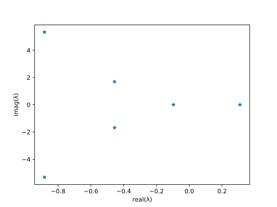

NEP-PACK
NEP-PACK is a package with implementations of methods to solve nonlinear eigenvalue problems of the type: Find $(λ,v)\in\mathbb{C}\times\mathbb{C}^n$ such that
and $v\neq 0$.
Getting started
Install it as a registered package in Julia's REPL package mode by typing ] add Nonline...:
julia> ]
(v1.0) pkg> add NonlinearEigenproblemsThen we can start to load the NEP-PACK package
julia> using NonlinearEigenproblemsAs a first example we will solve the NEP associated with the matrix polynomial
The following code creates this NEP, by constructing an object called PEP, an abbreviation for polynomial eigenvalue problem. It subsequencly solves it using the NEP solution method implemented in polyeig():
julia> A0=[1.0 3; 5 6]; A1=[3.0 4; 6 6]; A2=[1.0 0; 0 1.0];
julia> nep=PEP([A0,A1,A2])
PEP(2, Array{Float64,2}[[1.0 3.0; 5.0 6.0], [3.0 4.0; 6.0 6.0], [1.0 0.0; 0.0 1.0]])
julia> λ,v=polyeig(nep)
(Complex{Float64}[1.36267+0.0im, -0.824084+0.280682im, -0.824084-0.280682im, -8.7145+0.0im], Complex{Float64}[-1.0+0.0im 0.739183-0.196401im 0.739183+0.196401im 0.627138+0.0im; 0.821812+0.0im -0.501408-0.375337im -0.501408+0.375337im 1.0+0.0im])You have now solved your first nonlinear eigenvalue problem with NEP-PACK.
In order to verify that we have a solution, we can check that $M(λ)$ is singular, with a singular vector $v$ such that $M(λ)v=0$:
julia> λ1=λ[1]; v1=v[:,1];
julia> using LinearAlgebra # the norm-function is in this Julia package
julia> norm(A0*v1+λ1*A1*v1+λ1^2*v1)/norm(v1)
1.1502634749464687e-14Accessing more complicated applications
We have made benchmark examples available through the function nep_gallery:
julia> nep=nep_gallery("dep0",100);
julia> size(nep)
(100, 100)
julia> λ,v=mslp(nep,tol=1e-10);
julia> λ
0.23169217667341738 - 2.1866254654451488e-16im
julia> size(v)
(100,)
julia> resnorm=norm(compute_Mlincomb(nep,λ,v))
3.124042808475689e-14Information about the gallery can be found by typing ?nep_gallery. The second arument in the call to nep_gallery is a problem parameter, in this case specifying that the size of the problem should be 100. The example solves the problem with the NEP-algorithm MSLP. The parameter tol specifies the tolerance for iteration termination.
All the NEP-solvers have considerble documentation easily available. Every NEP-solver has documentation accompanied with at least one example, and references to corresponding research papers, which we strongly recommend you to cite if you use the method. This is available to you in Julia's repl-prompt. Type ?mslp and you will see an example how to use mslp and that citation credit should go to A. Ruhe, Algorithms for the nonlinear eigenvalue problem, SIAM J. Numer. Anal. 10 (1973) 674-689. This documentation is the same as the online documentation under the tab NEP Methods.
A model of a neuron
The following (delay) differential equation models a neuron
See L. P. Shayer and S. A. Campbell. Stability, bifurcation and multistability in a system of two coupled neurons with multiple time delays. SIAM J. Applied Mathematics , 61(2):673–700, 2000. It is also available as a first demo in DDE-BIFTOOL. The linear stability analysis of this problem requires the solution of a nonlinear eigenvalue problem
where the matrices are the Jacobian at the stationary solution. For the zero stationary solution, the matrices are
kappa=0.5; a2=2.34; a1=1; beta=-1;
A0=-kappa*[1 0; 0 1];
A1=a2*[0 0; 1 0];
A2=a1*[0 1; 0 0];
A3=beta*[1 0; 0 1];We can now create the nonlinear eigenvalue problem and compute the stability by first creating the problem
julia> tauv=[0;0.2;0.2;1.5];
julia> dep=DEP([A0, A1, A2, A3],tauv);The constructor DEP is an abbreviation for a delay eigenvalue problem, which is a NEP with exponential terms stemming from the stability analysis of a delay-differential equation. See types for other NEP-types. You can now solve this NEP, for instance, with the infinite Arnoldi method:
julia> λ,V=iar_chebyshev(dep,maxit=100); # This takes some time the first time is run due to JIT-compilerThe figure in a demo of DDE-BIFTOOL http://ddebiftool.sourceforge.net/demos/neuron/html/demo1_stst.html#3 can be directly generated by
using PyPlot
plot(real(λ),imag(λ),"*");
xlabel("real(λ)"); ylabel("imag(λ)");┌ Warning: No working GUI backend found for matplotlib
└ @ PyPlot ~/.julia/packages/PyPlot/cdCMF/src/init.jl:155
This problem is also available in the Gallery by calling dep=nep_gallery("neuron0"). Most of the NEPs constructed in the tutorials are also available in corresponding gallery problems. See all gallery problems under NEP Gallery. In particular, note that the problems in the Berlin-Manchester collection of problems NLEVP are also directly available.
The "gun" benchmark problem
One of the most common benchmark problems for NEPs is the so-called "gun"-problem. It models an electromagnetic cavity, and it is directly available in the NEP-PACK gallery. (See gallery references or type ?nep_gallery at the repl-prompt.) This is how you can set it up and solve it with the block Newton method:
julia> nep=nep_gallery("nlevp_native_gun");
julia> n=size(nep,1)
julia> S=150^2*[1.0 0; 0 1]; V=[[1 0; 0 1]; zeros(n-2,2)];
julia> (Z,X)=blocknewton(nep,S=S,X=V,logger=1,armijo_factor=0.5,maxit=20)
Iteration 1: Error: 6.081316e+03
Iteration 2: Error: 1.701970e-02 Armijo scaling=0.031250
Iteration 3: Error: 1.814887e-02 Armijo scaling=0.250000
...
Iteration 13: Error: 6.257442e-09
Iteration 14: Error: 2.525942e-15This algorithm returns a partial Schur factorization of the NEP, and therefore the eigenvalues of the small matrix Z are eigenvalues of the problem. An eigenpair of the NEP can be extracted by diagonalizing:
julia> using LinearAlgebra
julia> (Λ,P)=eigen(Z);
julia> VV=X*P; # Construct the eigenvector matrix
julia> v=VV[:,1]; λ=Λ[1]
61330.208714730004 + 63185.15983933589im
julia> norm(compute_Mlincomb(nep,λ,v)) # Very small residual
1.8270553408452648e-16If you use the NEP-algorithms for research, please give the author of the algorithm credit by citiation. The recommended citation can be found in the function documentation, e.g., ?blocknewton.
Your own NEP nonlinearity
As an application researcher, we recommend that you first try to express your problem in the following form since it gives access to several efficient routines associated with the NEP, in turn making it possible to use many NEP-solvers. A problem that can be expressed as a (short) Sum of Products of Matrices and Functions can be represented with the objects of type SPMF in NEP-PACK. For instance, a problem with three terms
can be created by
julia> A=(1:4)*(1:4)'+I; B=diagm(1 => [1,2,3]); C=ones(4,4);
julia> f1= λ-> one(λ);
julia> f2= λ-> λ;
julia> f3= λ-> exp(sin(λ/2))
julia> nep=SPMF_NEP([A,B,C],[f1,f2,f3]);The NEP can now be solved with many algorithms, e.g.,
julia> λ,v=quasinewton(nep,λ=3)
(3.176099007141426 + 0.0im, Complex{Float64}[37.1759+0.0im, -21.3016+0.0im, 0.0937992+0.0im, -1.15711+0.0im])Note that the functions f1,f2 and f3 have to be defined for scalar values and for matrices (in the matrix function sense, not elementwise sense). This is the reason f1 needs to be defined as one(λ), instead of just 1.
As usual, you can check that we computed a sensible solution:
julia> (A+B*λ+C*exp(sin(λ/2)))*v
4-element Array{Complex{Float64},1}:
-6.586145128765412e-14 + 0.0im
2.8285461200559146e-14 + 0.0im
-4.1550357082583515e-14 + 0.0im
-8.815768150428286e-15 + 0.0imWhat now?
Now you are ready to try out the tutorial on artificial boundary conditions or on the boundary element method or have a look at the examples in NEP methods and NEP Gallery.